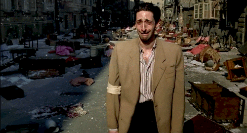

<!doctype html>
<html>
    <head>
        <title>the pianist</title>
        <link rel="stylesheet" href="main.css">
    </head>
</html>
<body>
    <p><a href="index.html">home</a> | <a href="saving.html">previous</a> | <a href="dunkirk.html">next</a></p>

    <h1>the pianist (2002) | ★★★★★</h1>

    <details>
        <summary>synopsis</summary>
        <p>synopsis: the true story of pianist władysław szpilman’s experiences in warsaw during the nazi occupation. when the jews of the city find themselves forced into a ghetto, szpilman finds work playing in a café; and when his family is deported in 1942, he stays behind, works for a while as a laborer, and eventually goes into hiding in the ruins of the war-torn city.</p>
    </details>

    <br>

<div class="aligncenter">
    
</div>

</body>